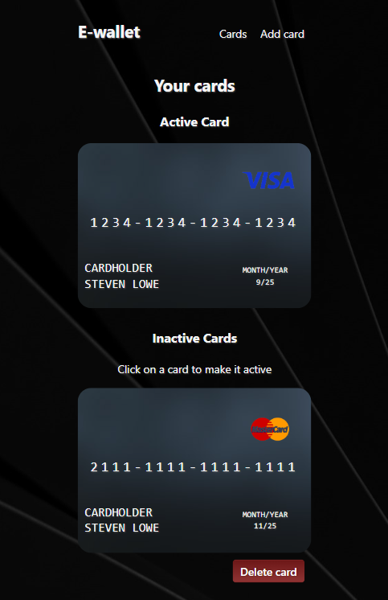

Hej och välkommen till min portfolio!
Nedan följer projekt jag skapat för några av de kurserna jag läst.
Alla projekt var individuella förutom uppgiften för kursen Frontend-Projekt.
JAVASCRIPT 1
Quiz
I detta projekt skulle ett quiz skapas där användaren kan se sitt resultat presenterat med antal rätt i en färgbaserad feedback. Frågorna är en blandning av sant/falskt-påståenden, multiple choice-frågor och checkbox-svar. Koden skulle även följa DRY-principen.
Ämnesområden: grunder i javascript med objekt, array-metoder, funktioner, if/else, loopar, manipulering av DOM:en, inputs, filtrering och sortering av data.
JAVASCRIPT 2
StarWars Trivia
Genom att hämta data från API:et https://swapi.dev/ kan olika karaktärer jämföras. Jobbade med Classes och när användaren väljer två karaktärer skapas två instanser av Classen. Classen har även metoder för ytterligare jämförelse av karaktärern.
Ämnesområden: objektorienterad programmering, fetch + API, dynamiska GET-requests, query parameters, axios, funktionell programmering.
HTML & CSS/SASS
Företags-hemsida
I detta projekt skapades en grafisk profil med färgkoder, typsnitt och logotyp(via Figma). Webbplatsen skulle bestå av sidorna: start, om oss, tjänster, referenser och kontakt. Semantisk HTML och SASS skulle användas. För VG skulle sidan skrivas i mobile-first och vara fullt responsiv samt ha tydliga färgkontraster enligt WCAG 2.1-kraven.
Ämnesområden: semantisk html, css selectors och specificity, display och position, flexbox, responsivitet och media queries, tillgänglighet, SASS.
REACT
E-wallet
I detta projekt byggde jag en E-wallet med React. Jag använde mig av hooksen useState, useLocation och useEffect. Biblioteken react-router och Redux Toolkit användes.
Applikationen tillåter användaren skapa och ta bort bankkort. Endast ett av användarens bankkort kan vara aktivt och användaren kan byta vilket kort som ska vara aktivt.
Applikationen har även validering vid skapandet av kort samt en förhandsvisning under tiden ett kort skapas
Ämnesområden: React, React-router, hooks, Redux Toolkit
FRONT-END PROJEKT
Väder-applikation
I detta projekt skulle vi lära oss att planera och utföra ett realistiskt frontend-projekt med hjälp av agil projektmetodik. Kursens mål var att ta fram en produkt utifrån kravspecifikationer och tidsestimera. Vi fick en app-idé tilldelad och arbetade i grupper om sex personer. Vi använde verktyget Miro för att skapa en User-Journey, Storymap, Taskmapping och genomföra sprintplanering. Vi genomförde två korta utvecklingssprintar och två Demos för beställaren.
I projektet arbetade jag främst med sökfälts-funktionen och grafen på hourly-vyn av vädret.
Ämnesområden: Nätverksanrop med fetch, agil projektmetodik
INTERAKTION MED CMS
Bokaffär
I detta projekt skulle jag utveckla en webbapplikation för en bokaffär där användare kan logga in, betygsätta och spara böcker. Jag arbetade med headless-CMS:et Strapi och kraven inkluderade att skapa ett CMS-gränssnitt för admin att ladda upp böcker. Det skulle finnas funktioner för inloggning och att registrera konto. I inloggat läge skulle funktioner finnas för att betygsätta böcker samt spara böcker i personliga att-läsa listor. För att uppnå VG-nivå krävdes det att admin-gränssnittet skulle erbjuda minst två färgteman på webbplatsen och att profilsidan skulle innehålla en lista över alla betygsatta böcker som användaren kan sortera efter titel, författare och betyg.
Ämnesområden: CMS, node.js, POST-, DELETE- och PUT-request
GRAFIKVERKTYG
Design för en påhittat hemsida
Uppgiften var att i Figma designa en hemsida och paketera underlaget för produktion. Med kriterierna: designen ska bestå av minst 3 sidor med fungerande prototyp-länkar mellan sidorna. Specifikation av de färger, typsnitt, skuggor mm. som används i designen. För VG krävdes det att bilderna var optimerade för bästa prestanda i lämpligt filformat med fallback-alternativ, tydlig uppdelning och benämning av vyer, komponenter, färger, typografistilar mm. samt att element som används upprepade gånger i designen ska vara instanser av komponenter.